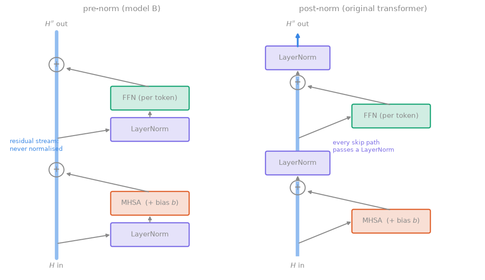
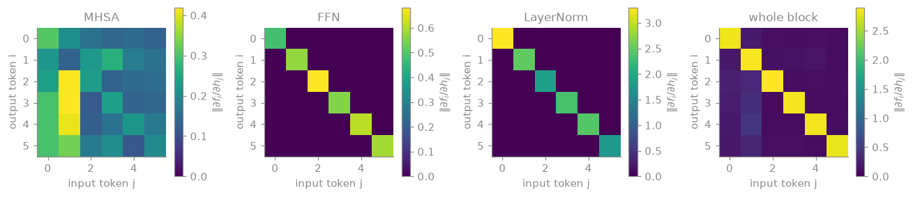
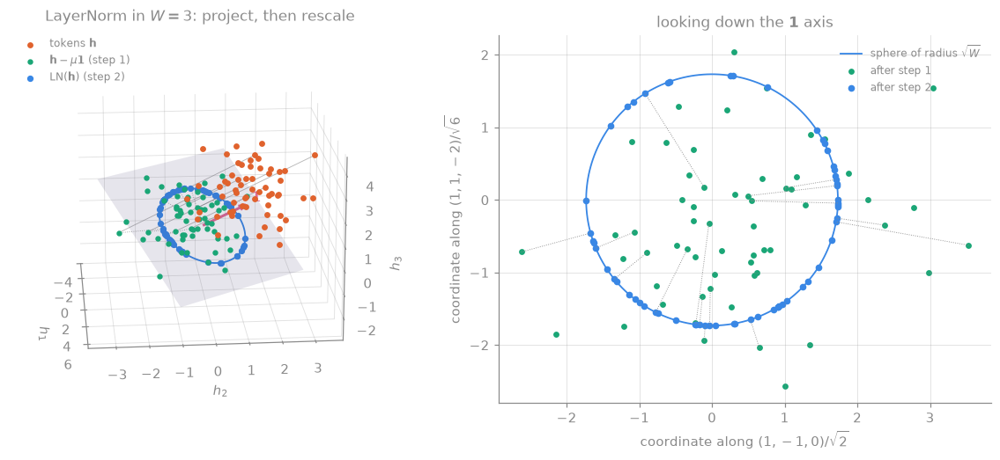
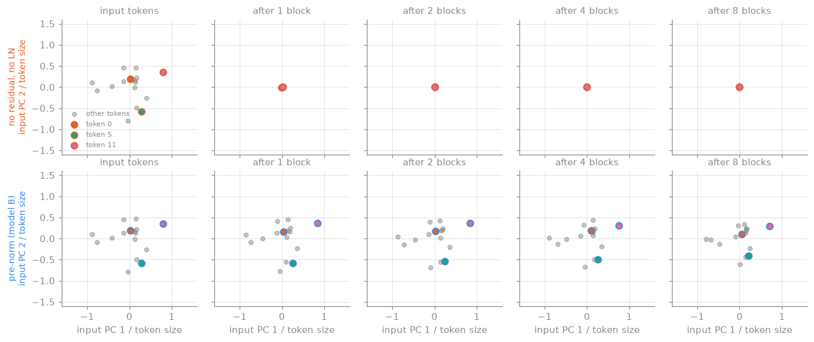
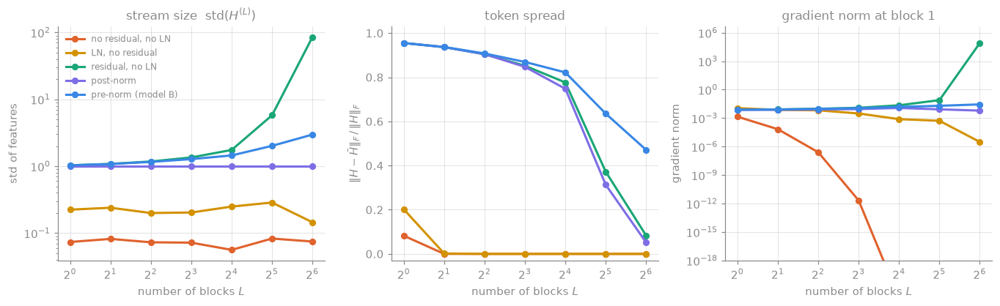
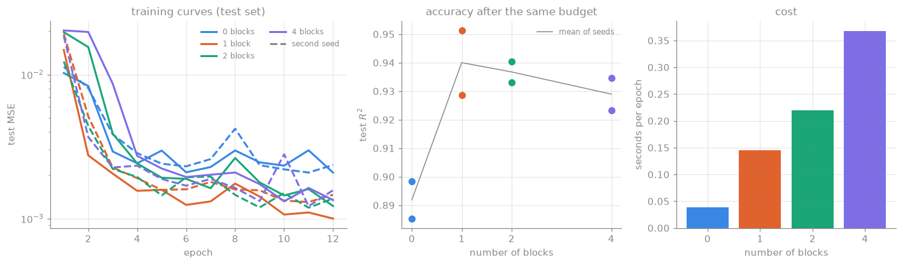
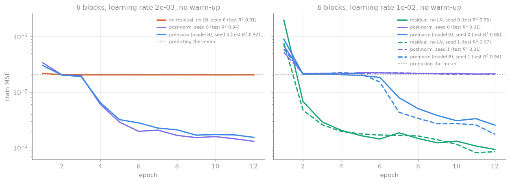
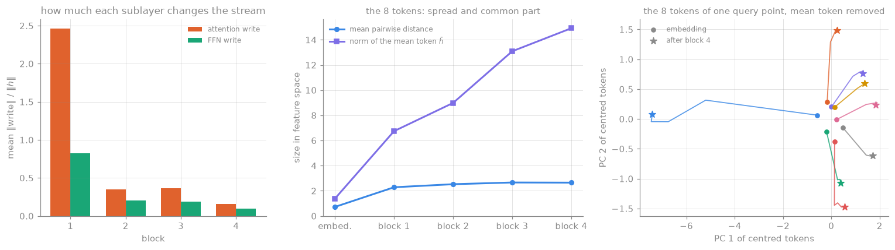

The transformer block: residuals, LayerNorm and the feed-forward network#
What you will learn
How attention, LayerNorm, a feed-forward network and two residual connections fit together into the pre-norm transformer block used by model B, and which of these parts let tokens talk to each other.
What each part is for, shown by removing it. Without residual connections, stacked attention blurs every token into the same point. Without LayerNorm, the residual stream grows with depth. With post-norm, the block can be the identity only on the LayerNorm sphere: it cannot pass on the scale or offset of the stream, and its skip path is a projection, not the identity.
What depth buys on a toy set task. You will train a tiny transformer with 0, 1, 2 and 4 blocks, read the training curves, and see that on this toy one block of attention matters most and later blocks add little.
How every piece maps onto the research model B.
Prerequisites: Lesson 05b (scaled dot-product attention), Lesson 05c (heads and additive float masks), Lesson 05d (why particles need permutation symmetry) and, for one analogy, Lesson 03a (damped fixed-point updates). The training task is the shielding toy of Lesson 05a.
import copy, math, os, time
import numpy as np
import matplotlib.pyplot as plt
from matplotlib.patches import FancyBboxPatch
import torch
import torch.nn.functional as F
from course_utils import models as mdl, training as tr, metrics as mt, plotting as cplt
from course_utils.attention import attention, split_heads, merge_heads, MultiHeadSelfAttention, TransformerBlock
from course_utils.equivariance import check_equivariance, check_invariance, check_permutation, report
from course_utils.models import neighbour_invariants, pair_invariants
torch.set_num_threads(min(4, os.cpu_count() or 1)) # small models: a few threads are enough
T0 = time.time()
1. The block in one picture#
Lessons 05b to 05d built attention: every token \(j\) looks at every token \(k\), and receives a weighted average of their values. Attention alone is not yet a network you can stack. A transformer block wraps it with three more parts. Here is the version model B uses, the pre-norm block. Write \(\mathbf h_j\in\mathbb R^W\) for the feature vector of token \(j\) (one neighbouring particle), \(H\) for the whole set of tokens and \(b\) for an optional additive bias on the attention logits:
\(\operatorname{MHSA}\) is the multi-head self-attention of Lesson 05c.
\(\operatorname{LN}\) is LayerNorm. It rescales each token’s feature vector to zero mean and unit variance (Section 3).
\(\operatorname{FFN}\) is the feed-forward network, a two-layer MLP applied to each token on its own. \(W_1\) maps \(\mathbb R^W\to\mathbb R^{fW}\) and \(W_2\) maps back, with an expansion factor \(f\). GELU is a smooth version of ReLU.
The two “\(H + \dots\)” are residual connections (skip connections). Each sublayer does not replace the token features. It adds a correction to them.
A useful mental model is the residual stream. Think of \(\mathbf h_j\) as a notepad that belongs to token \(j\) and is carried from block to block. Each sublayer reads the notepad (through a LayerNorm) and writes a correction back onto it. The two sublayers do different jobs. Attention moves information between tokens: it is the only place where neighbour \(j\) learns anything about neighbour \(k\). The FFN does computation within each token, turning what was gathered into new features.
Unrolling the stream. Because every sublayer adds, the output of a stack is the input plus a list of updates. For two blocks, with \(\Delta_1,\dots,\Delta_4\) the outputs of the four sublayers in order,
so the input is still inside the output as one of the summands. The same holds for derivatives. Number the sublayers \(l = 1,\dots,n\) and let \(J_l\) be the Jacobian of sublayer \(l\)’s update with respect to the stream it reads. Each sublayer maps the stream to itself plus an update, so by the chain rule
Multiplied out, the product contains the term \(I\): a path from input to output that passes through no sublayer at all. Without the skips the product is \(J_n\cdots J_1\) and every path runs through every sublayer. Section 4 shows what that does to the tokens.
Animation T4, the residual stream through one block. Six neighbours of one query point give six tokens, each a column of eight numbers; one column \(\mathbf h_j\) is enlarged and followed along a lane, the residual stream. LayerNorm reads a copy of the column: subtract the mean, divide by the spread. Attention is where the six tokens exchange information; the weights of token \(j\) produce an update that is added to the stream cell by cell, \(H' = H + \operatorname{MHSA}(\operatorname{LN}(H);\,b)\). After a second LayerNorm the feed-forward network handles each token alone with the same weights, and its update is added too, \(H'' = H' + \operatorname{FFN}(\operatorname{LN}(H'))\). Two blocks in a row are then written as the sum above, input plus four updates, with the outline of the input still visible inside the output. Notice the last experiment: six freshly initialised blocks with and without skip connections. Without them the spread between tokens falls with depth until the tokens sit on one point (Section 4.1 of this lesson); with them it shrinks only a little and the tokens stay apart, and the \(I\) in \(\prod_l(I + J_l)\) is the reason. (The clip takes the product over blocks, with \(J_l\) collecting both sublayers of block \(l\); the form is the same.) The numbers come from the course’s MiniB at width 8 with two heads and untrained, seeded weights, so the clip shows the mechanics of a block, not what a trained one computes. The clip is drawn on a dark stage in both page themes and has a voice-over with captions.
The older post-norm block from the original transformer paper [Vaswani et al., 2017] puts the LayerNorm after the addition instead:
The difference looks cosmetic. Sections 4.2 and 5 show that it is not: in post-norm, the skip path itself passes through a LayerNorm in every block.

2. Building the block from its parts, checked three ways#
We write the block from scratch with the symbols above, using the parameters of course_utils’s
TransformerBlock so that the two can be compared. LayerNorm first:
with a learned gain \(\boldsymbol\gamma\) and shift \(\boldsymbol\beta\) (initialised to ones and zeros) and a small \(\varepsilon\) that avoids division by zero.
def layer_norm(h, gamma=None, beta=None, eps=1e-5):
"""LN over the last (feature) axis of every token: (h - mu) / sqrt(var + eps), then gain and shift."""
mu = h.mean(-1, keepdim=True)
var = ((h - mu) ** 2).mean(-1, keepdim=True) # biased variance, as torch uses
z = (h - mu) / torch.sqrt(var + eps)
return z if gamma is None else gamma * z + beta
def ffn(z, lin1, lin2):
"""FFN(z) = W2 GELU(W1 z + c1) + c2, applied to every token separately."""
return lin2(F.gelu(lin1(z)))
def mhsa(z, attn_mod, bias=None):
"""Multi-head self-attention written out (Lesson 05c): fused q/k/v, heads, attention, output map."""
q, k, v = attn_mod.qkv(z).chunk(3, dim=-1)
q, k, v = (split_heads(t, attn_mod.heads) for t in (q, k, v))
return attn_mod.out(merge_heads(attention(q, k, v, bias=bias)))
def block_forward(blk, h, bias=None, norm="pre"):
"""One transformer block from its parts, using the parameters of a course_utils TransformerBlock."""
LN1 = lambda t: layer_norm(t, blk.ln1.weight, blk.ln1.bias, blk.ln1.eps)
LN2 = lambda t: layer_norm(t, blk.ln2.weight, blk.ln2.bias, blk.ln2.eps)
FFN = lambda t: ffn(t, blk.ffn[0], blk.ffn[2])
if norm == "pre":
h = h + mhsa(LN1(h), blk.attn, bias) # H' = H + MHSA(LN H)
return h + FFN(LN2(h)) # H'' = H' + FFN(LN H')
h = LN1(h + mhsa(h, blk.attn, bias)) # post-norm: LN after each addition
return LN2(h + FFN(h))
Now three comparisons in float64. First against course_utils.attention.TransformerBlock, which the course’s
MiniB uses. Then against PyTorch’s own nn.TransformerEncoderLayer, in both its pre-norm
(norm_first=True) and post-norm form. Finally we check one detail of how model B is implemented. The research
model hands its pair bias to PyTorch’s scaled_dot_product_attention as a float attn_mask, and that
must be the same as adding the bias to the logits by hand.
W, HEADS, FMULT, M = 32, 4, 2, 16
torch.manual_seed(0)
blk = TransformerBlock(W, HEADS, FMULT).double().eval()
with torch.no_grad(): # move LN gains/shifts off their defaults so the check means something
for ln in (blk.ln1, blk.ln2):
ln.weight.normal_(1.0, 0.2), ln.bias.normal_(0.0, 0.2)
h = torch.randn(8, M, W, dtype=torch.float64)
bias = torch.randn(8, HEADS, M, M, dtype=torch.float64)
with torch.no_grad():
err = (block_forward(blk, h, bias) - blk(h, bias=bias)).abs().max().item()
print(report("from-scratch block vs course_utils TransformerBlock", err, 1e-12, "with a float bias"))
err = (layer_norm(h, blk.ln1.weight, blk.ln1.bias) - blk.ln1(h)).abs().max().item()
print(report("from-scratch LayerNorm vs torch.nn.LayerNorm", err, 1e-12))
def torch_layer(blk, norm_first):
"""nn.TransformerEncoderLayer with blk's weights copied in (in_proj = qkv, out_proj = out, ...)."""
lay = torch.nn.TransformerEncoderLayer(W, HEADS, dim_feedforward=FMULT * W, dropout=0.0, activation="gelu",
batch_first=True, norm_first=norm_first).double().eval()
with torch.no_grad():
lay.self_attn.in_proj_weight.copy_(blk.attn.qkv.weight), lay.self_attn.in_proj_bias.copy_(blk.attn.qkv.bias)
lay.self_attn.out_proj.weight.copy_(blk.attn.out.weight), lay.self_attn.out_proj.bias.copy_(blk.attn.out.bias)
for dst, src in ((lay.linear1, blk.ffn[0]), (lay.linear2, blk.ffn[2]), (lay.norm1, blk.ln1), (lay.norm2, blk.ln2)):
dst.weight.copy_(src.weight), dst.bias.copy_(src.bias)
return lay
with torch.no_grad():
for norm, nf in (("pre", True), ("post", False)):
err = (block_forward(blk, h, norm=norm) - torch_layer(blk, nf)(h)).abs().max().item()
print(report(f"{norm}-norm block vs nn.TransformerEncoderLayer(norm_first={nf})", err, 1e-12))
q, k, v = (torch.randn(8, HEADS, M, W // HEADS, dtype=torch.float64) for _ in range(3))
err = (F.scaled_dot_product_attention(q, k, v, attn_mask=bias) - attention(q, k, v, bias=bias)).abs().max().item()
print(report("F.scaled_dot_product_attention with float attn_mask vs logits + bias", err, 1e-12))
PASS from-scratch block vs course_utils TransformerBlock: max error 8.9e-16 (tol 1e-12) [with a float bias]
PASS from-scratch LayerNorm vs torch.nn.LayerNorm: max error 1.1e-15 (tol 1e-12)
PASS pre-norm block vs nn.TransformerEncoderLayer(norm_first=True): max error 6.7e-16 (tol 1e-12)
PASS post-norm block vs nn.TransformerEncoderLayer(norm_first=False): max error 1.8e-15 (tol 1e-12)
PASS F.scaled_dot_product_attention with float attn_mask vs logits + bias: max error 1.1e-15 (tol 1e-12)
All four agree to round-off. The block in this lesson, the block in course_utils and PyTorch’s standard
layer are the same function.
2.1 Which parts let tokens talk to each other?#
The claim in Section 1 was that only attention mixes tokens. We can test it exactly. For a function \(f\) that maps the set \(H\) (shape \(M\times W\)) to a new set, the Jacobian \(\partial f(H)_i / \partial \mathbf h_j\) is a \(W\times W\) block for every pair of tokens \((i, j)\). If token \(i\)’s output does not depend on token \(j\)’s input, that block is zero. Below, each panel shows the size (Frobenius norm) of every block, for a small set of \(M=6\) tokens.
torch.manual_seed(1)
small = TransformerBlock(8, 2, 2).double()
hs = torch.randn(6, 8, dtype=torch.float64)
parts = {
"MHSA": lambda t: small.attn(t[None])[0],
"FFN": lambda t: small.ffn(t),
"LayerNorm": lambda t: small.ln1(t),
"whole block": lambda t: small(t[None])[0],
}
blocks_norm = {}
for name, f in parts.items():
J = torch.autograd.functional.jacobian(f, hs) # (M, W, M, W)
blocks_norm[name] = J.permute(0, 2, 1, 3).flatten(2).norm(dim=-1) # (M, M): |d out_i / d in_j|
off = blocks_norm[name] * (1 - torch.eye(6, dtype=torch.float64))
print(f"{name:<12} largest off-diagonal Jacobian block: {off.max().item():.1e}")
assert blocks_norm["FFN"].fill_diagonal_(0).max() == 0 and blocks_norm["LayerNorm"].fill_diagonal_(0).max() == 0
MHSA largest off-diagonal Jacobian block: 4.2e-01
FFN largest off-diagonal Jacobian block: 0.0e+00
LayerNorm largest off-diagonal Jacobian block: 0.0e+00
whole block largest off-diagonal Jacobian block: 4.3e-01

The FFN and LayerNorm panels are diagonal: their off-diagonal blocks are exactly zero, not merely small. Only attention fills the matrix, and so the whole block inherits a full matrix from it. The whole block’s diagonal is brightest because of the residual connection: \(\partial \mathbf h''_i/\partial \mathbf h_i\) contains the identity matrix, whose Frobenius norm is \(\sqrt W\) (\(\sqrt 8\) for this small block). This is the division of labour in every transformer: attention communicates, the FFN computes.
Because no part of the block knows the order of the tokens, relabelling the input tokens only relabels the output tokens. This is the permutation equivariance of Lesson 05d, now for a whole block:
check_permutation(lambda t: blk(t), (h,), axis=1, mode="equivariant", name="pre-norm block, no bias")
# with a pair bias, a relabelling must permute both token axes of b_jk (rows j AND columns k);
# building b from per-token positions inside f makes that automatic, as P_jk does in model B
xk = torch.randn(8, M, 3, dtype=torch.float64)
pair_b = lambda t, x: blk(t, bias=-(x[:, :, None] - x[:, None]).norm(dim=-1)[:, None].expand(-1, HEADS, -1, -1))
check_permutation(pair_b, (h, xk), axis=1, mode="equivariant", name="pre-norm block, bias built from pairs");
PASS pre-norm block, no bias: max error 2.2e-16 (tol 1e-12) [3 random permutations of axis 1 (equivariant)]
PASS pre-norm block, bias built from pairs: max error 2.1e-16 (tol 1e-12) [3 random permutations of axis 1 (equivariant)]
The second check builds the bias from pairs of token positions, \(b_{jk} = -|\mathbf x_j - \mathbf x_k|\), so that relabelling the tokens relabels both axes of \(b\). Model B’s pair bias is built the same way, from pair features \(P_{jk}\) (Lesson 05f).
3. LayerNorm, seen geometrically#
LayerNorm does two things to each token’s feature vector, and both have a picture.
Subtract the mean. \(\mathbf h - \mu\mathbf 1\) removes the component along the all-ones direction \(\mathbf 1 = (1,\dots,1)\). Geometrically, it projects \(\mathbf h\) onto the hyperplane through the origin perpendicular to \(\mathbf 1\).
Divide by the standard deviation. After step 1, \(|\mathbf h-\mu\mathbf 1| = \sqrt W\,\sigma\). Dividing by \(\sigma\) puts every token on the sphere of radius \(\sqrt W\) inside that hyperplane.
So with \(\boldsymbol\gamma = \mathbf 1\), \(\boldsymbol\beta=\mathbf 0\) and \(\varepsilon = 0\), LayerNorm maps all of \(\mathbb R^W\) onto a \((W-2)\)-dimensional sphere. With \(W=3\) we can draw it: the sphere is a circle of radius \(\sqrt3\) in the plane \(h_1+h_2+h_3=0\).

Two consequences follow from the picture.
Scale and offset of a token are forgotten. Multiplying a token by \(a>0\) or adding a constant \(c\) to all of its features lands on the same point of the sphere: \(\operatorname{LN}(a\mathbf h + c\mathbf 1) = \operatorname{LN}(\mathbf h)\). This is how LayerNorm keeps the input of every sublayer at a fixed size, however large the residual stream has grown.
Only \(W-1\) directions survive the projection, and the length goes. What a sublayer reads is the direction of the token within the hyperplane. In pre-norm, the stream itself keeps its length; only the copy that is read is normalised.
The identity holds exactly with \(\varepsilon = 0\) and up to a term of order \(\varepsilon/\sigma^2\) with the default \(\varepsilon\):
gen = torch.Generator().manual_seed(4)
a = torch.rand(8, M, 1, dtype=torch.float64, generator=gen) * 10 + 0.1 # a > 0, one per token
c = torch.randn(8, M, 1, dtype=torch.float64, generator=gen) * 5 # one offset per token
z0 = layer_norm(h, eps=0.0)
err0 = (layer_norm(a * h + c, eps=0.0) - z0).abs().max().item()
print(report("LN(a h + c 1) = LN(h), eps = 0", err0, 1e-12, "random a > 0 and c per token"))
print(f"rows of LN(h): largest |mean| {z0.mean(-1).abs().max():.1e}, largest |var - 1| {(z0.var(-1, unbiased=False) - 1).abs().max():.1e}")
err_eps = (layer_norm(a * h + c) - layer_norm(h)).abs().max().item()
print(f"with the default eps = 1e-5 the same identity is off by {err_eps:.1e} (order eps / sigma^2, not round-off)")
PASS LN(a h + c 1) = LN(h), eps = 0: max error 6.9e-15 (tol 1e-12) [random a > 0 and c per token]
rows of LN(h): largest |mean| 1.2e-16, largest |var - 1| 5.6e-16
with the default eps = 1e-5 the same identity is off by 5.6e-04 (order eps / sigma^2, not round-off)
3.1 Failure first: LayerNorm on Cartesian components breaks equivariance#
The hyperplane in the picture is perpendicular to \(\mathbf 1 = (1, 1, 1)\), a fixed direction in the lab frame. If a token’s features were the \(x, y, z\) components of a physical vector, LayerNorm would treat the direction \((1,1,1)\) as special, and rotating the vector before normalising would not be the same as rotating it after. The check fails:
x_vec = torch.randn(32, M, 3, dtype=torch.float64)
try:
check_equivariance(lambda x: F.layer_norm(x, (3,)), (x_vec,), ("vector",), name="LayerNorm on (x, y, z)")
except AssertionError as err:
print("caught:", err)
FAIL LayerNorm on (x, y, z): max error 2.1e+00 (tol 1e-12) [5 random g in O(3), det = [-1, 1]]
caught: LayerNorm on (x, y, z): equivariance error 2.117e+00 >= tol 1.0e-12
Model B never lets that happen. Its tokens are built only from norms and dot products (Lesson 05f), so every LayerNorm, FFN and attention layer acts on invariant numbers. Stacking any number of blocks on invariant tokens therefore gives invariant features, and the vector output is assembled at the very end as invariant coefficients times the input vectors. We check this below in Section 6, on the model we train.
4. Residual connections: failure before success#
4.1 Without them, stacked attention blurs all tokens into one point#
Each row of an attention matrix is a set of non-negative weights that sum to one. So, without a residual connection, every token’s new value is a convex combination (a weighted average) of the value vectors. A weighted average of points can never lie outside them. With the value map equal to the identity, the diameter of the token cloud, \(\max_{i,j}|\mathbf h_i - \mathbf h_j|\), can only shrink. Let us check both statements on random data before we look at what they mean for a deep stack.
gen = torch.Generator().manual_seed(5)
hh = torch.randn(64, M, W, dtype=torch.float64, generator=gen)
logits = torch.randn(64, M, M, dtype=torch.float64, generator=gen) * 3
w = torch.softmax(logits, dim=-1)
print(report("attention rows sum to one", (w.sum(-1) - 1).abs().max().item(), 1e-12),
f"; smallest weight {w.min().item():.1e} (>= 0)")
diam = lambda t: torch.cdist(t, t).amax((-1, -2))
ratio = diam(w @ hh) / diam(hh)
print(f"diameter after / before one averaging step: largest {ratio.max():.3f} over 64 random sets (never above 1)")
assert (ratio <= 1 + 1e-12).all()
PASS attention rows sum to one: max error 4.4e-16 (tol 1e-12) ; smallest weight 9.1e-09 (>= 0)
diameter after / before one averaging step: largest 0.980 over 64 random sets (never above 1)
Stack such averaging steps and the cloud contracts again and again. With learned value and output maps and an FFN between them, the contraction is no longer guaranteed at every step, but it is what happens in practice: deep attention without skip connections loses rank very fast, a known result for pure attention stacks (Dong et al., linked in the references). In the next figure, 16 random tokens pass through freshly initialised blocks, with and without residual connections. Each panel centres the tokens and projects them onto the two main directions of variation of the input tokens (their top two principal components), divided by the typical size of a token at that layer. Each row uses one basis for all its panels, and three tokens are coloured so that you can follow them from panel to panel. A collapse shows as all dots meeting at the centre.
class Block(torch.nn.Module):
"""A transformer block with switches: norm in {'pre', 'post', 'none'}, residual on/off.
norm='pre', residual=True is exactly course_utils.attention.TransformerBlock (same parameter names)."""
def __init__(self, width, heads, ffn_mult=2, norm="pre", residual=True):
super().__init__()
self.norm, self.r = norm, 1.0 if residual else 0.0
make_ln = (lambda: torch.nn.LayerNorm(width)) if norm != "none" else torch.nn.Identity
self.ln1, self.ln2 = make_ln(), make_ln()
self.attn = MultiHeadSelfAttention(width, heads)
self.ffn = torch.nn.Sequential(torch.nn.Linear(width, ffn_mult * width), torch.nn.GELU(),
torch.nn.Linear(ffn_mult * width, width))
def forward(self, h, bias=None):
if self.norm == "post":
h = self.ln1(self.r * h + self.attn(h, bias=bias))
return self.ln2(self.r * h + self.ffn(h))
h = self.r * h + self.attn(self.ln1(h), bias=bias)
return self.r * h + self.ffn(self.ln2(h))
VARIANTS = { # label: (norm, residual)
"no residual, no LN": ("none", False),
"LN, no residual": ("pre", False),
"residual, no LN": ("none", True),
"post-norm": ("post", True),
"pre-norm (model B)": ("pre", True),
}
VCOL = { # one colour per variant, used in every figure below
"no residual, no LN": cplt.PALETTE[1], "LN, no residual": cplt.PALETTE[5], "residual, no LN": cplt.PALETTE[2],
"post-norm": cplt.PALETTE[3], "pre-norm (model B)": cplt.PALETTE[0],
}
def stack(norm, residual, depth, seed=0):
torch.manual_seed(seed)
return torch.nn.ModuleList([Block(W, HEADS, FMULT, norm, residual) for _ in range(depth)]).double()
def stream(blocks, h):
out = [h]
for b in blocks:
out.append(b(out[-1]))
return out
# check the switchable block against course_utils in its default setting
bb = Block(W, HEADS, FMULT).double()
bb.load_state_dict(blk.state_dict())
with torch.no_grad():
print(report("Block(norm='pre') vs TransformerBlock", (bb(h, bias) - blk(h, bias=bias)).abs().max().item(), 1e-12))
PASS Block(norm='pre') vs TransformerBlock: max error 0.0e+00 (tol 1e-12)

Without skip connections (top row), the tokens have nearly merged after a single block and are one point after two. Every neighbour then carries the same features, so nothing downstream can tell neighbour \(j\) from neighbour \(k\). With residual connections (bottom row), the cloud keeps its shape and the three coloured tokens stay close to where they started. Each block only nudges them.
4.2 With them, a block can be the identity#
The residual form \(\mathbf h \mapsto \mathbf h + F(\mathbf h)\) has a simple but important property: if a block’s two output projections are zero, the block is exactly the identity map. A deep stack can therefore start close to the identity and learn only the corrections it needs. The gradient flows back through the product \(\prod_l (I + J_l)\), where \(J_l\) is the Jacobian of the \(l\)-th correction, and the \(I\) in each factor gives the gradient a direct path to the first block.
For post-norm, the same zeroing leaves \(H'' = \operatorname{LN}_2(\operatorname{LN}_1(H))\). Two separate effects are hidden in that expression, so we test them one at a time:
On a general input (any scale, any offset), LayerNorm moves the stream onto its sphere, so the block is far from the identity.
With the default gain and shift (\(\boldsymbol\gamma=\mathbf 1\), \(\boldsymbol\beta=\mathbf 0\)) and an input that is already normalised, \(\operatorname{LN}(\operatorname{LN}(\mathbf h)) \approx \operatorname{LN}(\mathbf h)\), and the block is the identity up to the \(\varepsilon\) effect. Inside a post-norm stack, every block after the first sees such an input.
def zero_writes(block):
b = copy.deepcopy(block)
with torch.no_grad():
for lin in (b.attn.out, b.ffn[2]):
lin.weight.zero_(), lin.bias.zero_()
return b
h_gen = a * h + c # a general input: random scale a and offset c per token (Section 3)
h_sphere = F.layer_norm(h, (W,)) # an input already on the LayerNorm sphere
with torch.no_grad():
for norm in ("pre", "post"):
b = Block(W, HEADS, FMULT, norm=norm).double() # default LN gain 1 and shift 0
err = (zero_writes(b)(h_gen, bias) - h_gen).abs().max().item()
print(f"{norm:>4}-norm, zeroed writes, general input: max |block(h) - h| = {err:.1e}")
err_sph = (zero_writes(b)(h_sphere, bias) - h_sphere).abs().max().item()
print(f"post-norm, zeroed writes, normalised input: max |block(h) - h| = {err_sph:.1e} (the eps effect)")
assert err_sph < 1e-3
pre-norm, zeroed writes, general input: max |block(h) - h| = 0.0e+00
post-norm, zeroed writes, general input: max |block(h) - h| = 3.8e+01
post-norm, zeroed writes, normalised input: max |block(h) - h| = 1.4e-05 (the eps effect)
So post-norm can be the identity, but only on the sphere: it cannot pass the stream’s scale or offset through. The deeper difference is in the gradient. Near a normalised token \(\mathbf z\), the Jacobian of LayerNorm (with \(\varepsilon=0\)) is
a projection that removes the offset direction \(\mathbf 1\) and the scale direction \(\mathbf z\). The skip path of a zeroed post-norm block is \(P_{\mathbf z}P_{\mathbf z} = P_{\mathbf z}\), not \(I\). We check both statements in float64 for one token:
LN0 = lambda t: F.layer_norm(t, (W,), eps=0.0)
z1 = LN0(h[0, 0]) # one token exactly on the sphere, W = 32
P_z = torch.eye(W, dtype=torch.float64) - (torch.ones(W, W, dtype=torch.float64) + torch.outer(z1, z1)) / W
J_skip = torch.autograd.functional.jacobian(lambda t: LN0(LN0(t)), z1) # zeroed post-norm block, eps = 0
print(report("Jacobian of the post-norm skip path = P_z", (J_skip - P_z).abs().max().item(), 1e-12))
ev = torch.linalg.eigvalsh((J_skip + J_skip.T) / 2)
print(f"eigenvalues: {int((ev.abs() < 1e-9).sum())} zeros and {int(((ev - 1).abs() < 1e-9).sum())} ones "
f"(the pre-norm skip path has {W} ones)")
PASS Jacobian of the post-norm skip path = P_z: max error 1.1e-16 (tol 1e-12)
eigenvalues: 2 zeros and 30 ones (the pre-norm skip path has 32 ones)
Two directions of the gradient are cut at every post-norm block; the pre-norm skip path passes all \(W\).
An analogy with Part III: the damped Picard update of Lesson 03a, \(\mathbf q \leftarrow \mathbf q + \alpha\,(T(\mathbf q) - \mathbf q)\), has the same residual form, and a stack of residual blocks can be read as a few learned update steps on the tokens’ states. Only an analogy: each block has its own weights, and no fixed point is sought.
5. Pre-norm versus post-norm, measured at initialisation#
Training decides in the end, but much of the difference between the variants is visible before any training. We push the same random tokens through freshly initialised stacks of 1 to 64 blocks and measure three things:
stream size, the standard deviation of the output features (it starts near 1);
token spread, \(\|H - \bar H\|_F / \|H\|_F\), where \(\bar H\) repeats the mean token: 0 means the tokens have collapsed to one point (Section 4.1), and it equals 1 only when the mean token is zero. For \(M\) random zero-mean tokens it is about \(\sqrt{1-1/M}\), here \(\approx 0.97\);
gradient at the first block, the norm of the gradient of a fixed random linear loss with respect to the first block’s \(q/k/v\) weights.
DEPTHS = [1, 2, 4, 8, 16, 32, 64]
h_probe = torch.randn(32, M, W, dtype=torch.float64, generator=torch.Generator().manual_seed(7))
probe = {}
for label, (nm, res) in VARIANTS.items():
blocks = stack(nm, res, max(DEPTHS))
with torch.no_grad():
hs_ = stream(blocks, h_probe)
size = [hs_[L].std().item() for L in DEPTHS]
spread = [((hs_[L] - hs_[L].mean(1, keepdim=True)).norm() / hs_[L].norm()).item() for L in DEPTHS]
grads = []
for L in DEPTHS:
out = h_probe
for b in blocks[:L]:
out = b(out)
target = torch.randn(out.shape, dtype=torch.float64, generator=torch.Generator().manual_seed(8))
g, = torch.autograd.grad((out * target).mean(), blocks[0].attn.qkv.weight)
grads.append(g.norm().item())
probe[label] = (size, spread, grads)
print(f"{label:<20} 64 blocks: stream size {size[-1]:8.2f} token spread {spread[-1]:.3f} "
f"first-block gradient {grads[-1]:.1e}")
no residual, no LN 64 blocks: stream size 0.07 token spread 0.000 first-block gradient 3.6e-84
LN, no residual 64 blocks: stream size 0.15 token spread 0.000 first-block gradient 3.1e-06
residual, no LN 64 blocks: stream size 85.17 token spread 0.083 first-block gradient 8.1e+04
post-norm 64 blocks: stream size 1.00 token spread 0.052 first-block gradient 6.2e-03
pre-norm (model B) 64 blocks: stream size 2.97 token spread 0.471 first-block gradient 2.8e-02

# the reading below rests on these comparisons at 64 blocks; stop the build if a rerun changes them
sz, sp, gr = ({k: v[i][-1] for k, v in probe.items()} for i in range(3))
assert max(sp["no residual, no LN"], sp["LN, no residual"]) < 1e-3
assert sz["residual, no LN"] > 10 * sz["pre-norm (model B)"] and gr["residual, no LN"] > 100 * gr["pre-norm (model B)"]
assert abs(sz["post-norm"] - 1) < 0.05
assert sp["pre-norm (model B)"] > 2 * max(sp["post-norm"], sp["residual, no LN"]) and sp["pre-norm (model B)"] < 0.9
Read the panels variant by variant.
No residual (with or without LayerNorm): the spread drops to zero after very few blocks and the gradient reaching block 1 vanishes. LayerNorm alone cannot help, because it acts on each token separately and cannot pull merged tokens apart again.
Residual, no LayerNorm: each block adds an unnormalised correction, so the stream and the gradient at block 1 grow with depth, to far above their starting values. The residual connection alone does not keep the tokens distinct: the spread decays almost as far as in post-norm. Every attention write is a weighted average over tokens, so (one likely reason) it adds a component that the tokens share, and here nothing keeps those writes small relative to the stream.
Post-norm: the stream size is pinned to one by construction, and the gradient at block 1 stays flat as depth grows. The spread decays to a small fraction of its starting value, like the variant without LayerNorm.
Pre-norm: the stream grows slowly (each block adds a correction of bounded size, since the sublayers read normalised inputs) and the gradient at block 1 stays moderate. It loses spread too, but by far the least of the five.
The combination of residual connections with LayerNorm on the read path is what keeps every quantity in a reasonable range at 64 blocks. That is the main reason model B, like most modern transformers, uses pre-norm. At initialisation none of this predicts which variant trains best at 6 small blocks, as the next section shows.
6. A tiny transformer on a toy set task#
6.1 The task and the model#
We reuse the shielding toy of Lesson 05a. Each sample is one query point \(\mathbf x_f\) and its \(M=8\) nearest particles (fewer than in Lesson 05f, which keeps the attention matrices small and leaves time for more training steps). The target is the neighbour-set velocity \(\mathbf y = \sum_j S_j\, G(\mathbf x_{fj})\,\mathbf s_j\), where the factor \(S_j = \prod_{k\neq j}\big(1-\sigma w_k(j)\big)\) weakens neighbour \(j\)’s contribution when another neighbour \(k\) sits between \(j\) and the query point. The particle states are the toy’s exact slips (an oracle, as in Lesson 05f). The point of this target is that it cannot be written as a sum of terms that each depend on one neighbour alone: some exchange of information between neighbours is required. That makes it a good test of what attention, and stacking attention, buy.

Fig. 6 Why the shielding target needs communication between neighbours. A plain sum (left) gives neighbour B the same weight whether or not A is in the way. Attention with a pair-geometry bias (right) can lower B’s weight because B sits in A’s shadow. The still is drawn on a dark background in both page themes. The full animation, with an interactive 3D version, plays in Lesson 05a, Section 3.#
The model is TinyB: model B’s tokens, pair bias and output head around a stack of the switchable blocks from
Section 4. How the tokens and the pair bias are built, and why the result is exactly equivariant, is the subject
of Lesson 05f. Here we take them as given and vary only the block stack. With
zero blocks, each token goes straight from its embedding to its coefficients, so the model is a pairwise sum of
the A0 kind with no attention at all.
class TinyB(torch.nn.Module):
"""Model B's embedding, pair bias and coefficient head around `depth` switchable blocks.
norm='pre', residual=True reproduces course_utils.models.MiniB exactly (same parameter names)."""
def __init__(self, width=32, depth=2, heads=4, ffn_mult=2, norm="pre", residual=True, bias_hidden=16):
super().__init__()
self.depth, self.heads = depth, heads
self.embed = torch.nn.Sequential(torch.nn.Linear(6, width), torch.nn.GELU(), torch.nn.Linear(width, width))
self.blocks = torch.nn.ModuleList([Block(width, heads, ffn_mult, norm, residual) for _ in range(depth)])
self.ln_f = torch.nn.LayerNorm(width) if norm == "pre" else torch.nn.Identity() # final LN (pre-norm only)
self.head = torch.nn.Linear(width, 2)
if depth: # ONE pair MLP gives every (layer, head) its own bias, computed once per forward
self.bias_mlp = torch.nn.Sequential(torch.nn.Linear(5, bias_hidden), torch.nn.GELU(),
torch.nn.Linear(bias_hidden, depth * heads))
with torch.no_grad(): # small head at initialisation, as in model B
self.head.weight.mul_(0.1), self.head.bias.zero_()
def stream(self, scalars, e_j, x_fj):
"""The residual stream: list of (B, M, W) tensors, input embedding then one per block."""
B, M_ = x_fj.shape[:2]
hs_ = [self.embed(neighbour_invariants(scalars, e_j, x_fj)[0])]
if self.depth:
bias = self.bias_mlp(pair_invariants(e_j, x_fj)).permute(0, 3, 1, 2).reshape(B, self.depth, self.heads, M_, M_)
for l, b in enumerate(self.blocks):
hs_.append(b(hs_[-1], bias=bias[:, l]))
return hs_
def forward(self, scalars, e_j, x_fj):
ab = self.head(self.ln_f(self.stream(scalars, e_j, x_fj)[-1])) # invariant (alpha_j, beta_j)
return (ab[..., :1] * x_fj + ab[..., 1:] * e_j).sum(1) # u = sum_j alpha_j x_fj + beta_j e_j
Data, and three checks before we train. TinyB must reproduce the course’s MiniB with the same parameters,
its stacked features must be invariant, as Section 3.1 promised, and its output must be equivariant and
independent of the neighbour order.
from course_utils.shielding import shielded_target
SIGMA, SWIDTH = 0.95, 1.0 # shielding strength and width, as in Lessons 05a and 05f
t = time.time()
snaps = cu.make_snapshots(6)
cfg = snaps[0].config
MT = 8 # neighbours per query point (tokens per set) for the training task
data = cu.make_dataset(snaps, n_points=1200, M=MT, frame="backflow", state="true", seed=0) # float64
data["y"] = shielded_target(data["scalars"], data["e_j"], data["x_fj"], SIGMA, SWIDTH,
radius=cfg.radius, screening_length=cfg.screening_length)
print(f"6 toy snapshots and {len(data['y'])} samples in {time.time() - t:.1f} s")
args = tuple(data[k][:64] for k in ("scalars", "e_j", "x_fj"))
KINDS = ("scalar", "vector", "vector")
torch.manual_seed(0)
ref, ours = mdl.MiniB(width=W, depth=2, heads=HEADS).double().eval(), TinyB(W, 2, HEADS).double().eval()
ours.load_state_dict(ref.state_dict())
with torch.no_grad():
print(report("TinyB(pre-norm) vs course_utils MiniB", (ours(*args) - ref(*args)).abs().max().item(), 1e-12))
check_invariance(lambda s, e, x: ours.stream(s, e, x)[-1], args, KINDS, name="stacked token features h^(L)")
check_equivariance(ours, args, KINDS, name="TinyB output u")
check_permutation(ours, args, axis=1, mode="invariant", name="TinyB output under relabelling");
6 toy snapshots and 7200 samples in 1.0 s
PASS TinyB(pre-norm) vs course_utils MiniB: max error 0.0e+00 (tol 1e-12)
PASS stacked token features h^(L): max error 6.1e-16 (tol 1e-12) [5 random g in O(3), det = [-1, 1]]
PASS TinyB output u: max error 3.3e-16 (tol 1e-12) [5 random g in O(3), det = [-1, 1]]
PASS TinyB output under relabelling: max error 3.3e-16 (tol 1e-12) [3 random permutations of axis 1 (invariant)]
Now the split. Train on four snapshots, test on the other two, never splitting rows of one snapshot (Lesson 04a). Training runs in float32 for speed.
d32 = {k: (v.float() if v.is_floating_point() else v) for k, v in data.items()}
train_d, test_d = tr.split_by_snapshot(d32, [0, 1, 2, 3], [4, 5])
EPOCHS, LR = 12, 2e-3
print(f"train {len(train_d['y'])} samples, test {len(test_d['y'])}; target variance {test_d['y'].var(0).sum():.3e}")
def fit(depth, seed, lr=LR, **kw):
torch.manual_seed(seed)
model = TinyB(W, depth, HEADS, **kw)
hist = tr.train(model, train_d, epochs=EPOCHS, lr=lr, batch=64, seed=seed, val=test_d, verbose=False)
return model, hist, mt.r2(tr.predict(model, test_d), test_d["y"])
train 4800 samples, test 2400; target variance 6.166e-02
6.2 What depth buys#
Note
The step from zero blocks to one below is a preview of the main result of Lesson 05f (“B fits what A0 cannot”), which also builds the tokens and the pair bias used here and looks at what the attention learns. Here the question is only how the number of blocks matters.
We train pre-norm models with 0, 1, 2 and 4 blocks, each with two seeds, for the same number of epochs.
SWEEP, SEEDS = [0, 1, 2, 4], [0, 1]
runs = {}
for depth in SWEEP:
for seed in SEEDS:
model, hist, r2 = fit(depth, seed)
runs[depth, seed] = (model, hist, r2)
print(f"{depth} blocks, seed {seed}: {mdl.param_count(model):>6,} parameters, test R2 {r2:.3f}, "
f"{hist['seconds'][-1] / EPOCHS:.2f} s per epoch")
0 blocks, seed 0: 1,410 parameters, test R2 0.898, 0.04 s per epoch
0 blocks, seed 1: 1,410 parameters, test R2 0.885, 0.04 s per epoch
1 blocks, seed 0: 10,118 parameters, test R2 0.951, 0.14 s per epoch
1 blocks, seed 1: 10,118 parameters, test R2 0.929, 0.15 s per epoch
2 blocks, seed 0: 18,730 parameters, test R2 0.940, 0.22 s per epoch
2 blocks, seed 1: 18,730 parameters, test R2 0.933, 0.22 s per epoch
4 blocks, seed 0: 35,954 parameters, test R2 0.935, 0.37 s per epoch
4 blocks, seed 1: 35,954 parameters, test R2 0.923, 0.37 s per epoch

no blocks: test R2 from 0.885 to 0.898; 1 to 4 blocks: from 0.923 to 0.951
every run with attention beats every run without: True
Three things stand out.
The step from zero blocks to one is the big one. With no blocks, each neighbour’s coefficients depend on that neighbour alone, which is the pairwise structure that Lesson 05a showed cannot express shielding. One block of attention lets every neighbour see every other. Every model with attention beat every model without it (the last printed line; the cell stops the build if a rerun changes that).
Beyond one block, the differences on this toy are small, of the same size as the differences between seeds (compare the two dots of one depth with the step between depths). In a set transformer one attention layer already connects every token to every other, so depth is not needed for reach. Depth buys composition: a second block can act on what the first gathered, which a two-step dependence (“is the particle that shields me itself shielded?”) could need. This target, at this budget, mostly does not.
Every block costs time. The cost per epoch grows with the number of blocks.
The research model B uses a few blocks. Real flows have richer many-body structure than this toy, and the right depth there is a question for experiment.
6.3 Deep stacks: what the variants do in training#
Section 5 compared the variants at initialisation. Does any of that show up in training? We train them at 6 blocks, without warm-up (warm-up means starting with a small learning rate and raising it over the first steps), at two learning rates: the one used so far, and a five times larger one that stresses the optimiser. At the normal rate we train three variants with one seed; at the high rate, three variants with two seeds each.
DEEP, LR_HIGH = 6, 1e-2
DEEP_RUNS = [("no residual, no LN", LR, 0), ("post-norm", LR, 0), ("pre-norm (model B)", LR, 0)]
DEEP_RUNS += [(lab, LR_HIGH, s) for s in (0, 1) for lab in ("residual, no LN", "post-norm", "pre-norm (model B)")]
deep = {}
for label, lr, seed in DEEP_RUNS:
model, hist, r2 = fit(DEEP, seed, lr=lr, norm=VARIANTS[label][0], residual=VARIANTS[label][1])
deep[label, lr, seed] = (hist, r2)
print(f"{label:<20} lr {lr:.0e} seed {seed}: final train MSE {hist['loss'][-1]:.2e}, test R2 {r2:.3f}")
print(f"for comparison, 0 blocks (Section 6.2): test R2 {min(r_none):.3f} to {max(r_none):.3f}")
no residual, no LN lr 2e-03 seed 0: final train MSE 2.05e-02, test R2 0.012
post-norm lr 2e-03 seed 0: final train MSE 1.30e-03, test R2 0.945
pre-norm (model B) lr 2e-03 seed 0: final train MSE 1.53e-03, test R2 0.922
residual, no LN lr 1e-02 seed 0: final train MSE 9.27e-04, test R2 0.954
post-norm lr 1e-02 seed 0: final train MSE 2.15e-02, test R2 0.009
pre-norm (model B) lr 1e-02 seed 0: final train MSE 2.54e-03, test R2 0.884
residual, no LN lr 1e-02 seed 1: final train MSE 8.45e-04, test R2 0.969
post-norm lr 1e-02 seed 1: final train MSE 2.09e-02, test R2 0.012
pre-norm (model B) lr 1e-02 seed 1: final train MSE 1.73e-03, test R2 0.937
for comparison, 0 blocks (Section 6.2): test R2 0.885 to 0.898

# guards for the reading below: stop the build if a rerun no longer shows these outcomes
r2d = {k: v[1] for k, v in deep.items()}
assert r2d["no residual, no LN", LR, 0] < 0.2 and deep["no residual, no LN", LR, 0][0]["loss"][-1] > 0.8 * mean_mse
assert r2d["post-norm", LR, 0] > 0.88 and r2d["pre-norm (model B)", LR, 0] > 0.88
assert max(r2d["post-norm", LR_HIGH, s] for s in (0, 1)) < 0.2
assert min(r2d["pre-norm (model B)", LR_HIGH, s] for s in (0, 1)) > 0.8
assert all(deep["pre-norm (model B)", LR_HIGH, s][0]["loss"][3] > 0.8 * mean_mse for s in (0, 1)) # plateau
assert np.mean([r2d["residual, no LN", LR_HIGH, s] for s in (0, 1)]) > np.mean([r2d["pre-norm (model B)", LR_HIGH, s] for s in (0, 1)])
What to take from this figure:
Without residual connections the deep model does not learn. Its loss stays near the dotted line, the error of always predicting the mean. This is the token collapse of Section 4.1 in action: if every neighbour carries the same features, the model cannot tell them apart. Of all the parts, the skip connection is the one this toy cannot do without.
At the normal learning rate, post-norm and pre-norm both train, to about the accuracy of the shallower pre-norm models of Section 6.2. The differences seen at initialisation in Section 5 do not decide the outcome at 6 small blocks.
At the high learning rate without warm-up, post-norm breaks on both seeds: its loss stays at the mean-prediction line. This is the known fragility of post-norm. Xiong et al. (linked below) show that at initialisation the gradients of the parameters near the output of a post-norm transformer are large, so a large learning rate from the first step destabilises training. The usual remedy is warm-up, and it works here (Exercise 3). Section 5 did not warn us: post-norm’s gradient at block 1 was flat. The failure is about the first optimiser steps, not about the forward pass at initialisation.
Pre-norm survives the high rate, but it is not unharmed. On both seeds it sits on the mean-prediction plateau for the first several epochs (a third of the budget) before it escapes, and its final accuracy then depends strongly on the seed; compare it with the printed 0-block range. Pre-norm is more tolerant of a missing warm-up, not immune to a bad learning rate. This toy does not show that pre-norm “needs no warm-up”.
Residual without LayerNorm is the best variant at the high rate in these runs, better than pre-norm on average. At 6 small blocks and under a thousand optimiser steps, the growth of the stream seen in Section 5 has not yet become a problem. LayerNorm is insurance against what happens at greater depth and in longer training, the regime the research model has to be robust in. On a small toy, insurance can look unnecessary.
6.4 Inside the trained residual stream#
Finally, we look inside the trained 4-block pre-norm model. For each sublayer, how large is the correction it writes onto the stream, relative to the size of the stream at that point? We split each block into its attention write \(\operatorname{MHSA}(\operatorname{LN}(H))\) and its FFN write \(\operatorname{FFN}(\operatorname{LN}(H'))\).
model4 = runs[4, 0][0].double().eval()
xs = tuple(test_d[k][:512].double() for k in ("scalars", "e_j", "x_fj"))
with torch.no_grad():
hs4 = model4.stream(*xs)
B_, M_ = xs[2].shape[:2]
bias4 = model4.bias_mlp(pair_invariants(xs[1], xs[2])).permute(0, 3, 1, 2).reshape(B_, 4, HEADS, M_, M_)
writes = []
for l, b in enumerate(model4.blocks):
hcur = hs4[l]
a_w = b.attn(b.ln1(hcur), bias=bias4[:, l])
f_w = b.ffn(b.ln2(hcur + a_w))
writes.append(((a_w.norm(dim=-1) / hcur.norm(dim=-1)).mean().item(),
(f_w.norm(dim=-1) / (hcur + a_w).norm(dim=-1)).mean().item()))
assert torch.allclose(hcur + a_w + f_w, hs4[l + 1], atol=1e-12) # the two writes ARE the block
for l, (aw, fw) in enumerate(writes):
print(f"block {l + 1}: attention writes {aw:.2f} x |h|, FFN writes {fw:.2f} x |h|")
assert writes[0][0] > 1 and writes[0][0] > 3 * max(w_[0] for w_ in writes[1:]), "text: block 1's write dominates"
block 1: attention writes 2.46 x |h|, FFN writes 0.83 x |h|
block 2: attention writes 0.35 x |h|, FFN writes 0.20 x |h|
block 3: attention writes 0.36 x |h|, FFN writes 0.19 x |h|
block 4: attention writes 0.16 x |h|, FFN writes 0.09 x |h|

The assert in the first code cell confirms the residual picture exactly: the output of every block is its
input plus the two writes. In this model the first block’s attention write is larger than the embedding it is
added to, and every later block writes a much smaller correction (the cell checks both). The first block
rewrites each token with what it gathered from the other neighbours. This matches Section 6.2, where the first
block bought most of the accuracy.
The other two panels separate two things that a plain picture of the tokens would mix up. The middle panel shows that the stream grows a large common part, the mean token \(\bar h\), which every token shares; much of the first attention write goes there, and it keeps growing in later blocks. The spread between tokens grows mostly in block 1 and then levels off. The right panel removes the common part and follows each token of one query point from its embedding (dot) to the last block (star), in one shared 2D basis. The tokens move apart rather than together, and none collapses into another, which is what a residual stream should allow. How much each token moves differs a lot, so read it as a picture of one query point, not as a law.
7. How this maps onto the research model B#
Every component above has a counterpart in the research model. The structure is the same; only the sizes differ.
Component |
This lesson ( |
Research model B |
|---|---|---|
Block layout |
pre-norm: \(H + \operatorname{MHSA}(\operatorname{LN}H)\), then \(+\operatorname{FFN}(\operatorname{LN}H')\) |
the same pre-norm layout |
Attention |
one fused linear map \(W \to 3W\) for \(q, k, v\); \(H\) heads of size \(W/H\); output map \(W\to W\) |
the same |
Geometry in attention |
one pair MLP on \(P_{jk}\) gives a bias per layer and head, computed once per forward pass, added to the logits |
the same, passed to PyTorch’s |
FFN |
\(\operatorname{Linear}(W, fW)\), GELU, \(\operatorname{Linear}(fW, W)\), with \(f=2\) to stay small |
the same form, with the larger expansion that is usual for transformers [Vaswani et al., 2017] |
Positional encoding |
none: tokens are a set (Lesson 05d) |
none |
Dropout |
none |
none |
After the last block |
a final LayerNorm, then \(\operatorname{Linear}(W, 2)\) giving \((\alpha_j, \beta_j)\) |
the same |
Initialisation |
the head’s weights scaled by 0.1 and its bias zeroed, so the initial output is small |
the same |
Token features |
six invariants \(I_j\) |
the same invariants plus a radial-basis expansion of the distance (Lesson 05f) |
Depth |
0, 1, 2, 4 and 6 blocks in training (up to 64 in the initialisation probes) |
a few blocks |
Every LayerNorm, FFN and attention layer in model B acts on invariant features only. This is why the symmetry argument of Lesson 05f does not have to treat them one by one.
print(f"total run time of this notebook: {time.time() - T0:.0f} s")
total run time of this notebook: 77 s
Summary#
A transformer block has two sublayers, attention and a per-token FFN, each wrapped as “read through a LayerNorm, add the result back”. Only attention moves information between tokens; the FFN and LayerNorm act on each token separately (their cross-token Jacobian blocks are exactly zero).
LayerNorm projects a token onto the hyperplane perpendicular to \((1,\dots,1)\) and rescales it to a fixed radius. It forgets the token’s scale and offset. Because \((1,\dots,1)\) is a fixed direction, LayerNorm must act on invariant features, never on Cartesian components; model B obeys this rule.
Residual connections keep the identity path open. Without them, attention is repeated averaging and the tokens collapse to one point within a few blocks. With them, a block can be the identity exactly, and deep stacks train.
Post-norm can be the identity only on the LayerNorm sphere, and its skip path is a projection that cuts two gradient directions per block. Pre-norm keeps the residual stream itself unnormalised and its skip path is the identity.
At initialisation, residual connections plus LayerNorm on the read path (pre-norm) keep stream size, token spread and gradients in a reasonable range as depth grows; every other variant lets at least one of them collapse or grow far larger. In training, post-norm failed at a high learning rate without warm-up; pre-norm got through, slowly.
On the shielding toy, the step from no attention to one block buys most of the accuracy. Further blocks add little and cost time. Depth buys composition, not reach, because every token already sees every other.
Exercises#
LayerNorm and sign. Section 3 showed \(\operatorname{LN}(a\mathbf h + c\mathbf 1) = \operatorname{LN}(\mathbf h)\) for \(a > 0\). What happens for \(a < 0\)? Predict it from the geometric picture, then check it numerically with \(\varepsilon=0\) and \(\boldsymbol\gamma=\mathbf 1\), \(\boldsymbol\beta=\mathbf 0\).
Count the parameters of one block. Write the number of trainable parameters of one pre-norm block as a function of the width \(W\) and the expansion factor \(f\), and check your formula with
mdl.param_countfor a few values. Which part dominates when \(f = 4\)?Rescue post-norm with warm-up. Write a training loop like
course_utils.training.trainthat raises the learning rate linearly from zero over the first two epochs, and train the 6-block post-norm model with it at the high learning rate. Compare its loss curve with the one in Section 6.3.How fast do tokens collapse? For the “no residual, no LN” stack, plot the token spread after \(L = 0, 1, 2, 3\) blocks on a log scale. Is the decay roughly geometric, or faster? How many of your points are above round-off, and how much can they tell you?
Solution 1
z = layer_norm(h, eps=0.0)
print(report("LN(-h) = -LN(h)", (layer_norm(-h, eps=0.0) + z).abs().max().item(), 1e-12))
Flipping the sign of \(\mathbf h\) flips the sign of \(\mathbf h - \mu\mathbf 1\) and leaves \(\sigma\) unchanged, so the normalised token moves to the antipodal point of the sphere: \(\operatorname{LN}(a\mathbf h + c\mathbf 1) = \operatorname{sign}(a)\,\operatorname{LN}(\mathbf h)\). LayerNorm forgets the size of a token but not its sign.
Solution 2
Attention: \(q,k,v\) map \(3W^2 + 3W\), output map \(W^2 + W\). FFN: \(fW\cdot W + fW\) and \(W\cdot fW + W\). Two LayerNorms: \(4W\). In total \((4 + 2f)\,W^2 + (9 + f)\,W\).
for Wt, ft in ((16, 2), (32, 2), (32, 4), (64, 4)):
n = mdl.param_count(TransformerBlock(Wt, 4, ft))
print(Wt, ft, n, (4 + 2 * ft) * Wt ** 2 + (9 + ft) * Wt)
With \(f = 4\) the FFN has \(8W^2\) weights against \(4W^2\) for attention, so two thirds of a block’s parameters sit in the per-token FFN, not in the part that moves information between tokens.
Solution 3
def train_warmup(model, data, epochs=EPOCHS, lr=LR_HIGH, warm_epochs=2, batch=64, seed=0):
opt = torch.optim.Adam(model.parameters(), lr=lr)
n = len(data["y"])
steps_per_epoch = math.ceil(n / batch)
sched = torch.optim.lr_scheduler.LambdaLR(opt, lambda s: min(1.0, (s + 1) / (warm_epochs * steps_per_epoch)))
gen = torch.Generator().manual_seed(seed)
losses = []
for ep in range(epochs):
perm, tot = torch.randperm(n, generator=gen), 0.0
for a0 in range(0, n, batch):
idx = perm[a0:a0 + batch]
loss = torch.mean((model(*(data[k][idx] for k in ("scalars", "e_j", "x_fj"))) - data["y"][idx]) ** 2)
opt.zero_grad(), loss.backward(), opt.step(), sched.step()
tot += loss.item() * len(idx)
losses.append(tot / n)
return losses
torch.manual_seed(0)
post = TinyB(W, DEEP, HEADS, norm="post")
losses = train_warmup(post, train_d)
print("final train MSE with warm-up:", losses[-1], " test R2:", mt.r2(tr.predict(post, test_d), test_d["y"]))
Plot losses next to the post-norm curve of Section 6.3. When we ran this with seed 0, two epochs of warm-up
were enough for the post-norm model to train at the high learning rate, to a test \(R^2\) as high as the best runs of
Section 6.3. That is one seed; check the printed \(R^2\) of your own run. Warm-up keeps the first updates small while the attention
weights and the scale of each sublayer’s output settle, and that early phase is where post-norm is fragile.
Try other seeds and warm-up lengths before you draw a general conclusion.
Solution 4
blocks = stack("none", False, 3)
with torch.no_grad():
hs_ = stream(blocks, h_probe)
sp = [((t_ - t_.mean(1, keepdim=True)).norm() / t_.norm()).item() for t_ in hs_]
plt.semilogy(range(4), np.maximum(sp, 1e-300), marker="o")
plt.xlabel("blocks"); plt.ylabel("token spread"); plt.show()
print(sp)
The spread is about 1, then about \(10^{-1}\), then about \(10^{-8}\), and by the third block it sits at round-off
(\(\sim 10^{-16}\)). That leaves only two usable ratios, and the second is far smaller than the first, so the
decay is faster than geometric here. This is suggestive of the “doubly exponential” rank collapse that Dong et
al. proved, but their theorem is for pure attention stacks with no FFN, and our blocks have one. Two ratios
cannot establish a rate. To look more closely, stack attention layers alone (MultiHeadSelfAttention, no FFN),
use more of them, or scale the input down so that the collapse takes more blocks to reach round-off.
References#
A. Vaswani et al., Attention is all you need [Vaswani et al., 2017]: the transformer block, the FFN and the post-norm arrangement.
J. Lee et al., Set Transformer [Lee et al., 2019]: transformer blocks on sets, without positional encodings.
K. He, X. Zhang, S. Ren and J. Sun, Deep residual learning for image recognition (2016), https://arxiv.org/abs/1512.03385: residual connections.
J. L. Ba, J. R. Kiros and G. E. Hinton, Layer normalization (2016), https://arxiv.org/abs/1607.06450.
R. Xiong et al., On layer normalization in the transformer architecture (2020), https://arxiv.org/abs/2002.04745: pre-norm versus post-norm and why post-norm needs warm-up.
Y. Dong, J.-B. Cordonnier and A. Loukas, Attention is not all you need: pure attention loses rank doubly exponentially with depth (2021), https://arxiv.org/abs/2103.03404: the token collapse of Section 4.1.
N. Elhage et al., A mathematical framework for transformer circuits (2021), https://transformer-circuits.pub/2021/framework/index.html: the residual-stream view of a transformer.
D. Hendrycks and K. Gimpel, Gaussian error linear units (GELUs) (2016), https://arxiv.org/abs/1606.08415.
MolSSI e3nn course [The Molecular Sciences Software Institute (MolSSI), 2024], for why norms and dot products are invariant: https://molssi-ai.github.io/e3nn-course/book/intro.html.